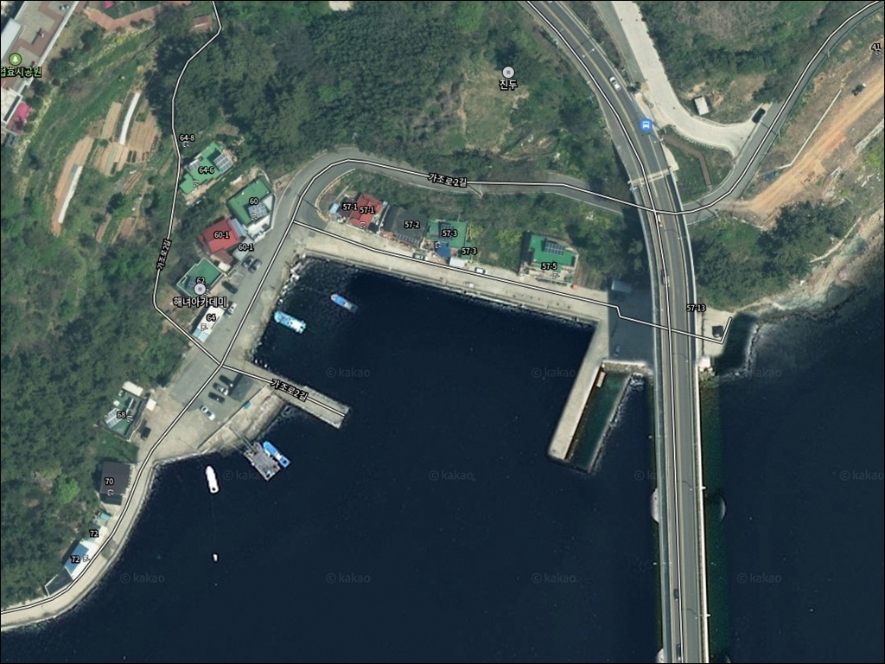
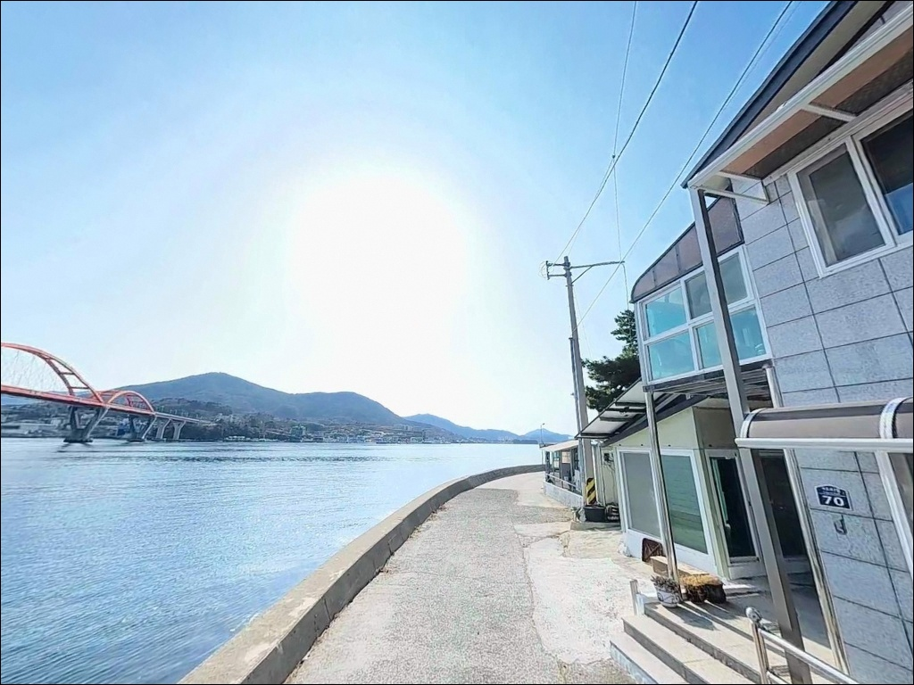
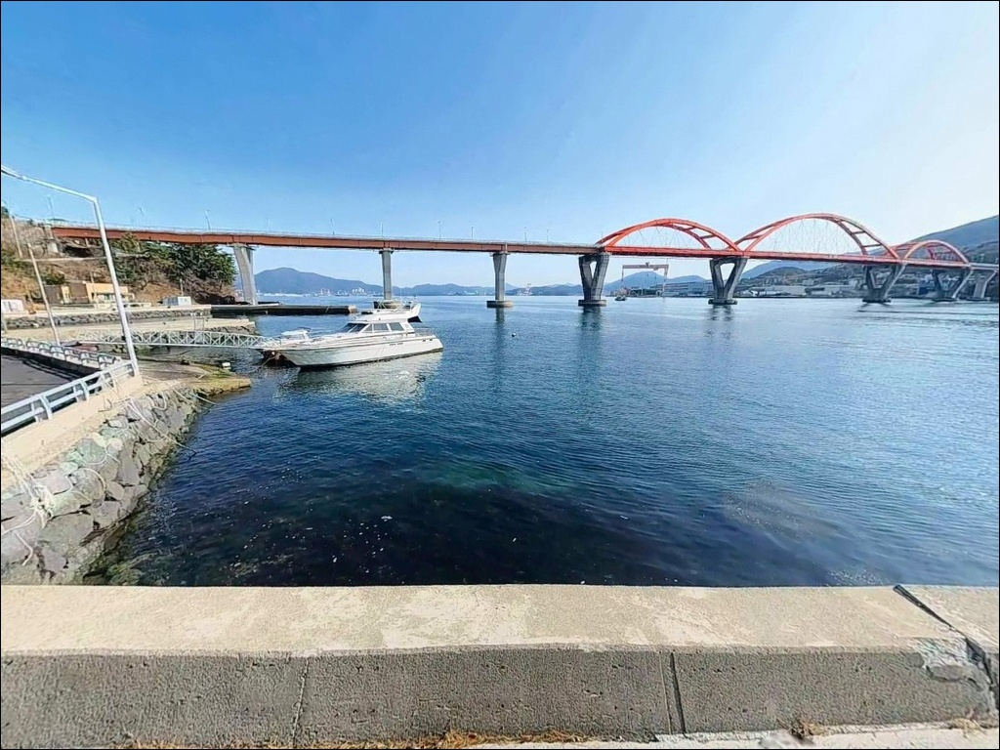
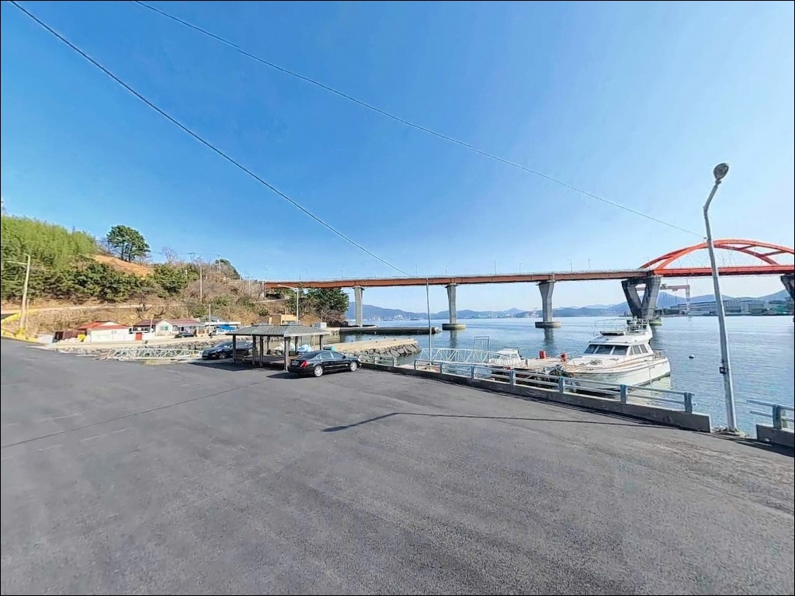
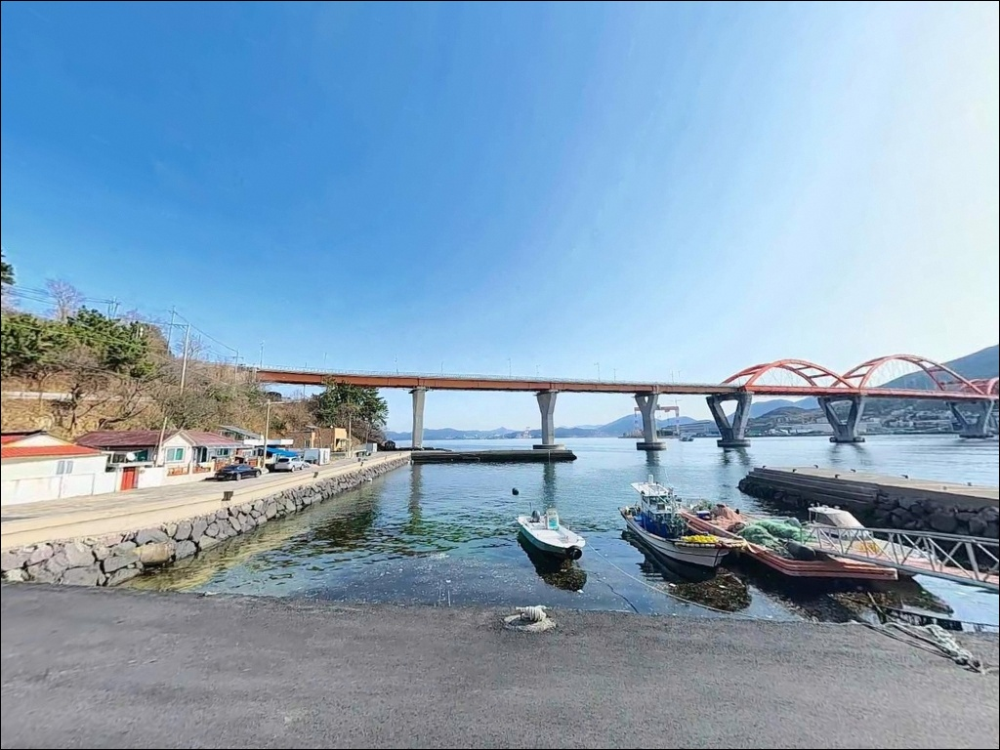
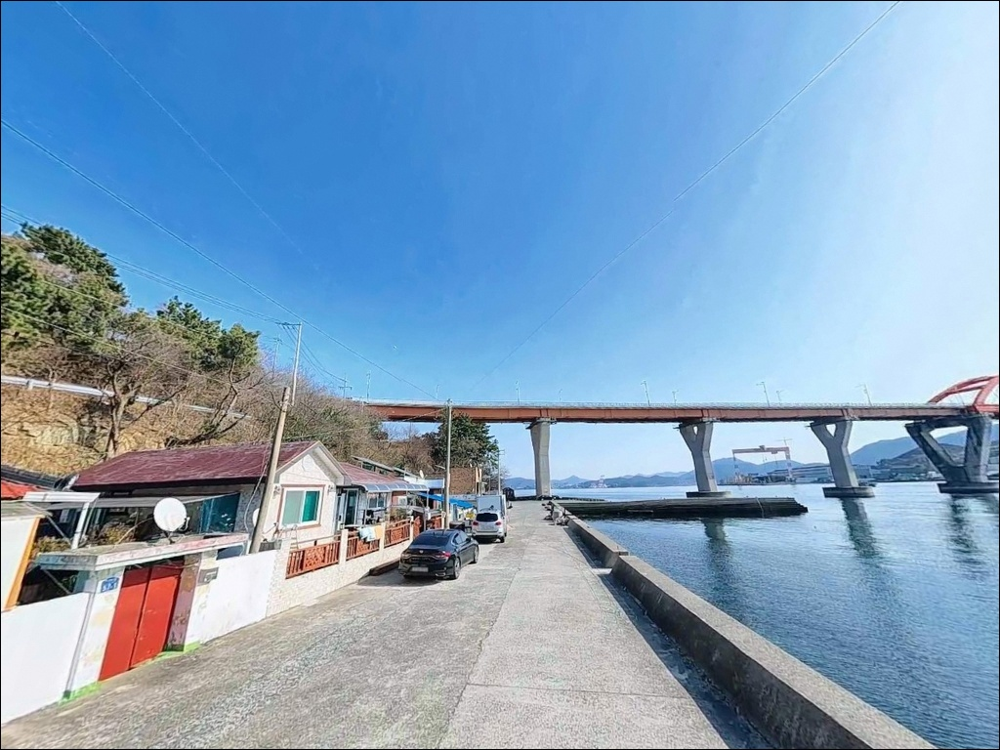
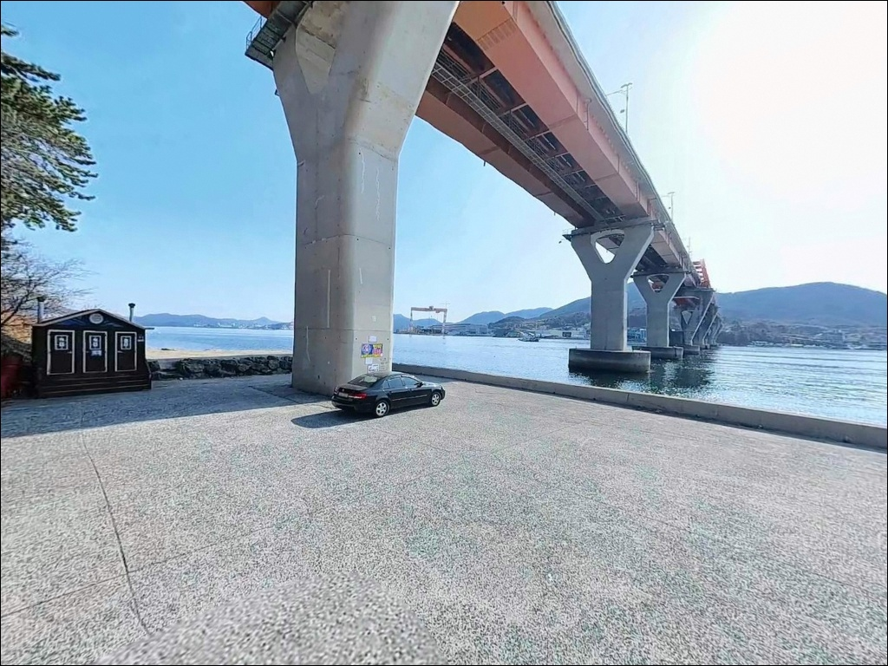
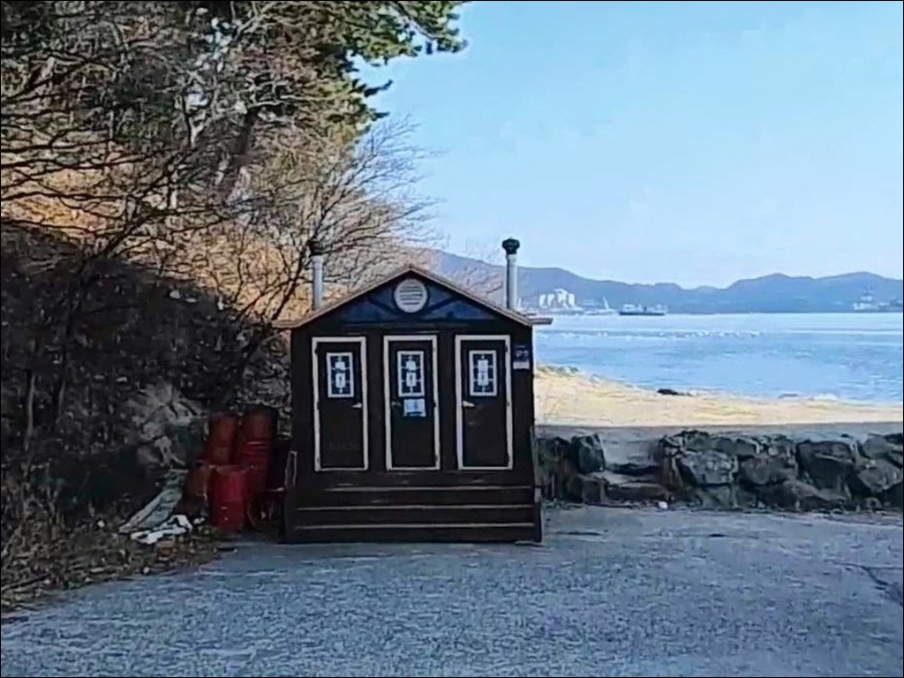
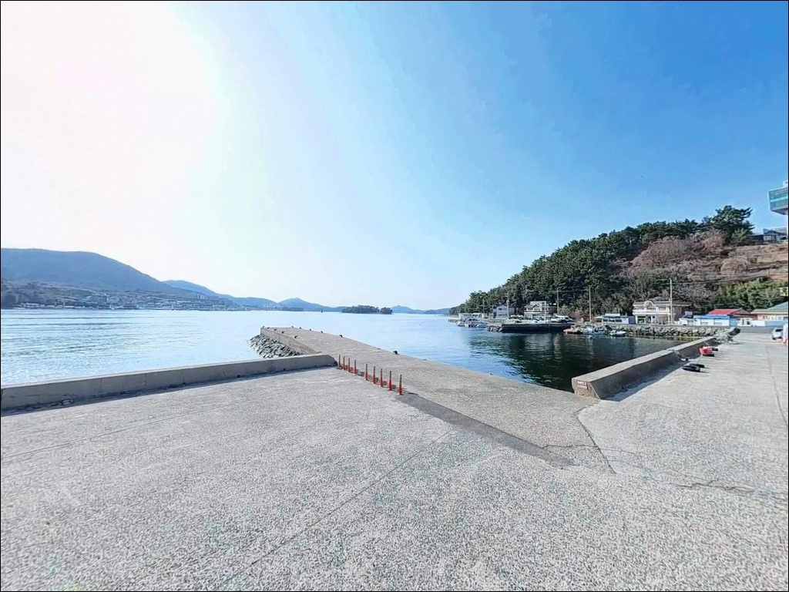

이 페이지에는 광고(제휴 링크 포함)가 있으며, 광고 링크를 통해 구매하면 운영자가 판매 수익 또는 수수료를 받을 수 있습니다. 포인트 사진: 카카오맵 스카이뷰·로드뷰. 이 페이지의 지도·사진 이미지는 카카오맵의 실제 서비스 이미지와 다를 수 있습니다.

가조항(가조도선착장)
경남 거제시 사등면 창호리 2073-2
가조연륙교 북단에 자리한 가조항은
교량을 통과하는 조류가 집중되는 구간으로,
진입 자리를 잘못 잡으면
어떤 채비도 흘러가버리는 구조입니다.
조류가 강한 사리 전후에는
찌도 에기도 컨트롤이 불가능해지며,
빈손으로 돌아서는 경우가 생기는 포인트입니다.
이 글은 가조항의 지형 구조와 조류 특성,
낚시 방식별 진입 조건, 차박 여건에 집중합니다.
조황 단정이나 특정 어종 보장은
이 글의 범위에 포함되지 않습니다.

가조항(가조도선착장)은 가조도 북단,
가조연륙교를 건너자마자 만나는 위치에 있습니다.
거제도 본섬 성포리에서
왕복 2차선 가조연륙교(680m)를 건너면
가조도에 진입하는 시점에
선착장과 방파제가 바로 연결되는 구조입니다.
섬 안쪽으로 깊이 들어갈 필요 없이
연륙교 진입 직후 포인트에 닿을 수 있어
접근 동선이 단순한 편입니다.
진입로는 포장 상태이며
승용차부터 중형 SUV까지 진입에 문제가 없습니다.
회차 공간은 선착장 내부와
진입로 초입에서 확보할 수 있는 구조이나,
대형 차량이라면 선착장 공터 방향으로
진입 전 회차 여건을 미리 파악해두는 편이 좋습니다.
통영IC 또는 거가대교 방향 모두
사등면 성포항을 경유해
가조연륙교를 건너는 동선이 기본이며,
네비게이션 목적지는
가조도선착장 또는 창호리 주소로 설정하면
무리 없이 진입할 수 있습니다.

가조항은 연륙교 초입에 위치하는 만큼
가조도에서 접근성이 가장 좋은 지점입니다.
선착장 주변 공터에서의 주차는
야간에도 유지할 수 있는 구조이며,
차량 통행이 줄어드는 야간에는
조용한 체류 환경이 갖춰지는 편입니다.
계도마을처럼 어촌체험 시설이 집중된 곳이 아니어서
프라이버시 면에서는 비교적 독립적입니다.
다만 연륙교 인접 구간이라
완전한 정적 환경이 아닐 수 있습니다.
바람이 강한 날에는
해상에서 올라오는 서풍을 직접 받는 구조이므로,
기상 확인 후 야간 체류 여부를
결정하는 것이 안전합니다.
해안도로 구간은 야간 조명이 제한적입니다.
야간 낚시 시에는 헤드랜턴과 집어등을
반드시 준비해야 하며,
구명조끼 착용은 방파제 낚시 포함
기본으로 갖춰야 합니다.

가조항이 자리한 가조도는
섬 내부에 대형 편의점이 없는 구조입니다.
연륙교 건너편 성포리에
편의점 접근이 가능하므로,
출조 전 본섬에서 충분히 보급을 마치는 것이
현실적인 준비 방식입니다.
식수, 얼음, 낚시 소품, 연료 모두
출발 전에 갖춰두는 편이 좋습니다.
성포항에는 수협 위판장과
제철 해산물 식사가 가능한 식당가가 갖춰져 있습니다.
연륙교 건너 바로 닿을 수 있는 거리여서
식사나 소품 보충은
성포리 방향을 활용하는 것이 효율적입니다.
응급 상황 발생 시
거제시 고현동까지 차량 이동이 필요합니다.
비상약품과 충분한 수분 준비는
출발 전에 기본으로 챙겨야 합니다.

가조항 방문에서 가장 먼저 확인할 것은
물때와 바람 방향입니다.
연륙교 조류 영향이 강하게 작용하는 구간이어서
사리 전후에는 조류가 빠르게 강해집니다.
바다타임에서 거제 사등면 기준 물때를 확인하고
조금 전후 또는 정조 전후 타이밍에 맞춰
입장 시각을 조율하는 것이 기본 전략입니다.
에깅을 주력으로 할 경우
조류 방향에 따라 채비 손실이 발생할 수 있으므로
여분 에기와 리더 라인을 넉넉하게 준비합니다.
선착장 어선 동선과 어구 방향을 먼저 파악하고,
캐스팅 방향이 어민 조업 구역과 겹치지 않도록
자리를 잡는 것이 기본 매너입니다.
가조도 내 대형 편의점이 없으므로
식수, 식량, 낚시 소품은 출발 전에 완비합니다.
최신 조황은 가기 전에 꼭 검색해 보시기 바랍니다.

가조항의 지형적 핵심은
가조연륙교를 통과하는 조류입니다.
교량 교각과 수로 구조가 조류를
특정 구간에 집중시키는 효과를 만들어내며,
이 집중된 흐름이 회유성 어종이
지나는 길목 역할을 합니다.
조류가 흐를 때 포인트 활성도가 높아지고,
정조에 가까워지면 입질이 급격히 줄어드는
패턴이 나타나는 구조입니다.
조류가 강한 구간에서는
채비 무게를 올리거나
정조 타이밍을 기다리는 방식이 현실적입니다.
방파제 외항 쪽은 조류 영향을 직접 받아
루어와 에기 반응이 살아나는 자리이며,
내항은 상대적으로 안정된 수면 조건을 유지합니다.
외항과 내항의 조류 세기 차이를 먼저 확인한 뒤
자리를 잡는 것이
이 포인트를 제대로 공략하는 기본 순서입니다.
가조도 동측으로는 양식장이 분포하며
선박 통행에 주의가 필요한 구간이 있습니다.
서풍이 강한 날에는
바람 방향이 캐스팅에 직접 영향을 미치므로
출조 전 기상 확인이 선행되어야 합니다.

조류 흐름이 살아 있는 가조항에서
가장 잘 맞는 방식은 에깅입니다.
무늬오징어를 대상으로
조류가 흐르는 타이밍에 원투 후
천천히 에기를 폴링시키는 방식이 기본입니다.
조류가 세면 세울수록 에기를 멀리 보내
흐름의 바깥 구간에서 캐스팅 각도를 조절하는 것이
이 포인트 에깅의 핵심입니다.
감성돔 릴찌낚시도 이 포인트 구조에 잘 맞습니다.
방파제 외항에서 조류를 타고
흘리는 채비 방식이 유효하며,
중들물 이후 조류가 살아나는 타이밍에
외해 방향으로 멀리 흘리는 방식이 적합합니다.
가을철에는 마릿수 조과를 기대해 볼 수 있는
시즌이기도 합니다.
농어 루어낚시도 연륙교 수로 구간에서
노려볼 수 있는 방식입니다.
미노우나 바이브레이션 계열 루어를
조류가 흐르는 방향으로 캐스팅하고
천천히 리트리브하는 방식이
이 구조에 어울립니다.
야간에는 볼락 라이트게임도
선착장 주변 어두운 경계면 탐색으로
마릿수를 기대해 볼 수 있습니다.

가조항 조류가 너무 강하거나
자리 여건이 맞지 않을 때의
첫 번째 대안은
계도마을 해안도로 구간입니다.
약 4km 거리로 동일 가조도 안에 있으며,
닭섬을 마주하는 오픈 연안 구조여서
갑오징어 에깅 채비 운용에 더 안정적인
여건을 제공합니다.
창촌마을 방파제도 가조도 내 대안입니다.
계도항 인근에 위치하고
릴찌낚시와 에깅 방식을
동일하게 적용할 수 있습니다.
가조항이 여의치 않을 때 창촌방파제를 경유하는 동선이
가조도 안에서 가장 효율적인
이동 경로입니다.
연륙교를 건너 성포항으로 이동하면
거제 본섬의 내만 방파제 낚시가 가능합니다.
진입과 주차가 안정적이고
편의점 및 식당 접근성이 높아,
성포항을 장박 베이스로 잡고
가조항까지 당일 낚시 원정 방식도 유효합니다.

에깅이나 감성돔 릴찌낚시를 즐기는 낚시인이라면
가조항의 구조는 잘 맞는 조건입니다.
연륙교 통과 조류가 만들어내는 흐름은
회유성 어종이 지나는 길목 역할을 하고,
진입과 주차가 안정적인 편이어서
처음 방문하는 포인트로서의 부담도 크지 않습니다.
반면 조류 타이밍을 무시하고 진입하거나,
사리 전후 강조류 구간에서 자리를 고집하면
채비 손실만 반복되는 포인트이기도 합니다.
물때 확인, 진입 자리 선택, 바람 방향 파악,
이 세 가지를 갖추고 간다면
가조도 낚시의 출발점으로 삼기 좋은 포인트입니다.
연륙교 바로 옆 선착장에서 하룻밤 차박을 겸해
조류가 살아나는 타이밍을 기다리며
자리를 잡는다면,
낚시와 차박을 하나의 동선으로
묶어내기 좋은 출조가 됩니다.